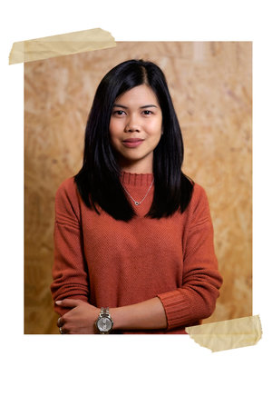

About Me
Hi! My name is Kriska.
Currently, I'm a Digital Marketeer with a specialization in UX and UI design at Jungle Gym.
I help apply UX and UI concepts that support, engage and convert customers.
My unique skill set and diverse background in design, education, and customer support
granted me my unique perspective on how we connect with digital products.
I'm always inspired by old and new things: pop culture, films, music, fashion, video games, and boulder problems.
You can read more about my design process and projects here.